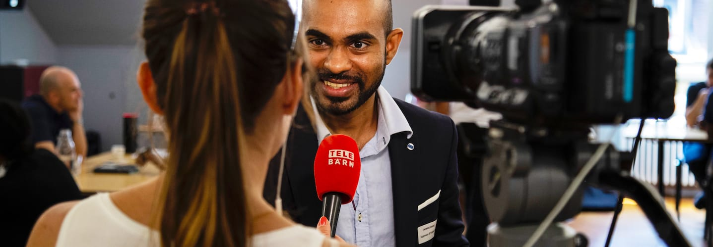

Participants
Companies
Volunteers
About
Press
Donate
Participants
Companies
Volunteers
About
Press
Donate
What the Press Says About Us

If you are a media person please get in touch with us:
press@powercoders.org
Download
press kit
Media Coverage
2021
25.2.2021
Berney Associés (blog / French):
Une expérience signée Powercoders
2020
25.11.2020
Swisscom ICT (blog / English):
Interview with Powercoders participant Marzieh Nopper
01.11.2020
20 Minuten (online news / German):
«Was mir passiert ist, könnte jedem passieren»
30.10.2020
SRF Radio, Wirtschaftsmagazin "Trend" (national radio / German):
Wie Asylsuchende in den Arbeitsmarkt integrieren?
20.10.2020
SRF Tagesschau (national TV / Deutsch):
Erfolgreiche Integration von Flüchtlingen
15.09.2020
Magazine "Leader" by the Swiss Manager Association SKO/ASC (magazine / DE, FR):
Kopf bis Fusss – Powercoders CEO Bettina Hirsig
25.08.2020
20 Minuten (newspaper / German):
Flüchtling Nematollah (22) wird zum IT-Crack
21.8.2020
Netzwoche (ICT magazine / German):
Projekt Powercoders schliesst Pilotphase ab
16.7.2020
Nau.ch (online news / German):
Ozra Rezaie aus Baden: Mit Coding zum Traumjob
13.07.2020
RTS Suisse (national TV / French):
Une association vaudoise propose une formation en informatique aux migrants
28.06.2020
SwissBanking "Insight" (online magazine / EN DE FR):
Refugees – the new up-and-coming talents in the IT industry
18.06.2020
east#digital (IT news platform / German) :
Geflüchtete – die neuen Nachwuchstalente für die IT
30.4.2020
Swiss IT Magazine (magazine / German):
Powercoders macht Flüchtlinge zu IT-Spezialisten
15.04.2020
Radio RaBe (radio /German):
Powercoders – Ein Sprungbrett in die IT-Branche für Geflüchtete
23.03.2020
20 minutes (newspaper / French):
Soutenir les entreprises en intégrant les réfugiés
19.02.2020
Netzwoche (ICT magazine / German):
Flüchtlingen Türen zur IT öffnen
17.02.2020
24 heures (newspaper /French):
Une académie du codage pour les réfugiés à Lausanne
14.02.2020
ICT journal (magazine / French):
Une école d’informatique destinée aux réfugiés voit le jour à Lausanne
14.02.2020
La Liberté (newspaper / French):
L’intégration par la technologie
14.02.2020
AGEFI (newspaper/French):
Powercoders: la Fondation UBS soutient l'école d'informatique pour les réfugiés
14.02.2020
RTS Info (radio/French):
Une formation réintègre les migrants dans le secteur de l'informatique
01.02.2020
Magazine "Demain" – Chambre vaudoise du commerce et de l'industrie (magazine / French):
Des réfugiés formés avec succès dans l’IT
2019
16.12.2019
Migros-Magazin (magazine / German):
Programm für ein besseres Leben
26.11.2019
Le Temps (blog / French):
Puisez chez Powercoders pour des pros en informatique!
17.11.2019
RTS at EPFL (radio / French):
Au temps du numérique: L'engagement
29.10.2019
Freiburger Nachrichten (newspaper / German):
Flüchtlinge gegen IT-Fachkräftemangel
16.09.2019
Tele Züri (TV / German):
So werden Flüchtlinge zu IT-Spezialisten
03.09.2019
Red Bull TV (video / English):
Portrait about Powercoders
26.08.2019
Le Temps (newspaper / French):
Un atelier de codage informatique à destination des femmes migrantes
26.08.2019
La Liberté (newspaper / French):
"Il faut démystifier le numérique"
12.07.2019
Franceinfo (radio / French):
En Suisse, une association forme les réfugiés au codage informatique
20.06.2019
Bluewin (newsportal / German), Interview with Jamila:
"Hier kann ich mich frei bewegen"
18.06.2019
Tele Bärn (TV/German):
Speed-Dating für Flüchtlinge auf Jobsuche
24.05.2019
Tribune de Genève (newspaper/French):
De zéro, ils se lancent en "migrantrepreneurs"
26.04.2019
Radio SRF Rendez-vous (German):
Flüchtlinge lernen Programmieren
25.04.2019
Srf digital (podcast / German):
Interview with Christian Hirsig
25.04.2019
Srf.ch (online / German), portrait Rami Jumaah:
Wie aus Geflüchteten Programmierer werden
25.04.2019
CNN Money Switzerland (Video / English):
Interview with Christian and Hussam
08.04.19
RTS La Première (radio / French):
L'invitée du 5h-6h30 - Première partie - Coline Sauzet, co-responsable de Powercoders pour la Suisse romande
08.03.2019
RTS Suisse (national TV / French):
Des migrants formés pour combler la pénurie d'informaticiens
12.02.2019
La Liberté (newspaper / French); story about our student Tenzin:
Ils s’intègrent grâce à l’informatique.
2018
22.12.2018
Der Bund (newspaper / German); interview with our founder Christian Hirsig:
"Es hilft, wenn man nicht zu viel von der Sache versteht"
12.12.2018
Red Bull Basement Festival (video/English):
Our Founder presents Powercoders
30.10.2018
Basel Area. Swiss. (magazin / German):
Mit den Powercoders werden Geflüchtete in Basel zu Programmierern
12.05.2018
CNN Money Switzerland (video/English):
Story of Husam
05.04.2018
Blogpost of Liip (article/English):
Mannar: from Aleppo to Bern
13.03.2018
Blogpost (article/Deutsch):
Powercoders: die Lösung für den Fachkräftemangel in der IT?
12. 02. 2018
Migros Magazin (article / Deutsch):
Erfolgreich integriert - Gajendran Packiyanathan (1)
Migros Magazin (article / Deutsch):
Erfolgreich integriert - Gajendran Packiyanathan (1)
2017
27.11.2017
TedX Zurich (video / English):
TedX Zurich - Talk of Founder Christian Hirsig
24.11.2017
SRF (national TV / Deutsch):
«Die Idee»: Flüchtlinge für die IT-Branche
11.2017
Ronorp (article / English):
Powercoders | Impacting lives by teaching to code
7.11.2017
Swissinfo.ch (Blogpost / English):
Coding boot camps take off in Switzerland
28. 9. 2017
Blick (newspaper / German):
Privater Verein bildet Flüchtlinge zu IT-Spezialisten aus
20. 9. 2017
Der Bund (newspaper / Deutsch):
Selbst gute Voraussetzungen reichen nicht unbedingt für einen Job
27. 8. 2017
Sonntagszeitung (newspaper / German):
Mannar Hielal ergreift ihre «silberne Chance»
26. 8. 2017
Berner Zeitung (newspaper / German):
Vom Flüchtling zum Computercrack
9. 8. 2017
Laufbahninfo (Blogpost / German):
Powercoders: IT-Kurs als Flucht nach vorn
10. 7. 2017
Tsri.ch (Blogpost / German):
Powercoders: Hier programmieren Geflüchtete
7. 7. 2017
pszeitung.ch (Blogpost / German):
Programmieren statt putzen
6. 7. 2017
Business 4 you (Blogpost / German):
Webdevelopment als Integrationsweg nutzen
20. 2. 2017
Berner Zeitung (newspaper / German):
Mit Javascript zum ersten Job
2016
31. 12. 2016
Der Bund (newspaper / German):
Mit Computercode in die Arbeitswelt
1. 12. 2016
Berner Zeitung (newspaper / German):
IT-Lösung für Flüchtlinge